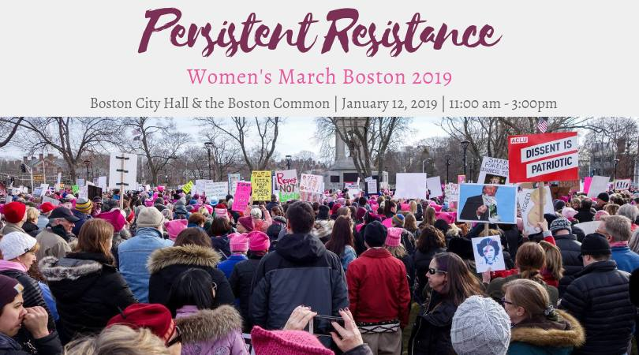

January 12, 2019
The Boston Women's March 2019: Persistent Resistance, Boston, MA, 11 AM to 3 PM
Details
We are so excited to announce that the 2019 Women’s March Boston will be taking place on January 12, 2019!
We are ecstatic to be back for another year of activism highlighting the experience of women within our community and why we continue to resist. Last year, in 2018, we marched and rallied in Cambridge. In 2017, we protested in Boston. Massachusetts and the rest of the country has been protesting, marching, and hosting rallies for two years. Now, we need to do more.
January 12, 2019 we will empower our women. We will march from City Hall to the Boston Common to come together and unite our voices.
This year we will provide a reality check. We will rally in the Boston Common with speakers and artistic performances to recognize where we stand as a community in Massachusetts and, more broadly, as a society in the United States.
This year we will call to action. We will have interactive booths set up around the Boston Common area to allow each woman and ally to make a difference on January 12th and beyond. We, as a community, will make goals for change and deadlines to hold our representatives and government accountable. We will work together to send letters to our representatives. Women will create an electronic storybook of our stories, experiences, and goals. We will have a “Kids’ Area” for families to come and engage as well. We will work together to creating lasting artwork from the signs made for the Women’s March. We will make a banner large enough for everyone to contribute to it. We will make our voices heard on January 12th and have tangible tools to continue our action moving forward.
The Women’s March 2019 will be hosted in Boston’s City Hall and Boston Common areas. We will gather at 11am in Boston’s City Hall. At 11:30 am we will start marching towards the Boston Common. The rally and events at the Boston Common will start at 12:30pm.
It is worth noting that, historically, the women’s march and inauguration anniversary fall within the same week. However, in 2019, the weekend of the inauguration anniversary also happens to be Martin Luther King Jr. Day weeked. Speaking to multiple Massachusetts towns, communities, and organizations, a consensus was reached to move the Women’s March. MLK Jr. Day weekend is a weekend meant to celebrate Black and African American communities and the civil rights MLK Jr. fought and died for. A Women’s March on MLK Jr. Day weekend intrude on the celebrations and events for Black and African-American communities taking place that weekend. Thus, instead of being on January 19th, the Women’s March Boston 2019 will be taking place on January 12th.
On January 12th we will celebrate women.
On January 12th we will support women.
On January 12th we will show that the fight for women and their rights is ongoing.
We will persist to resist.